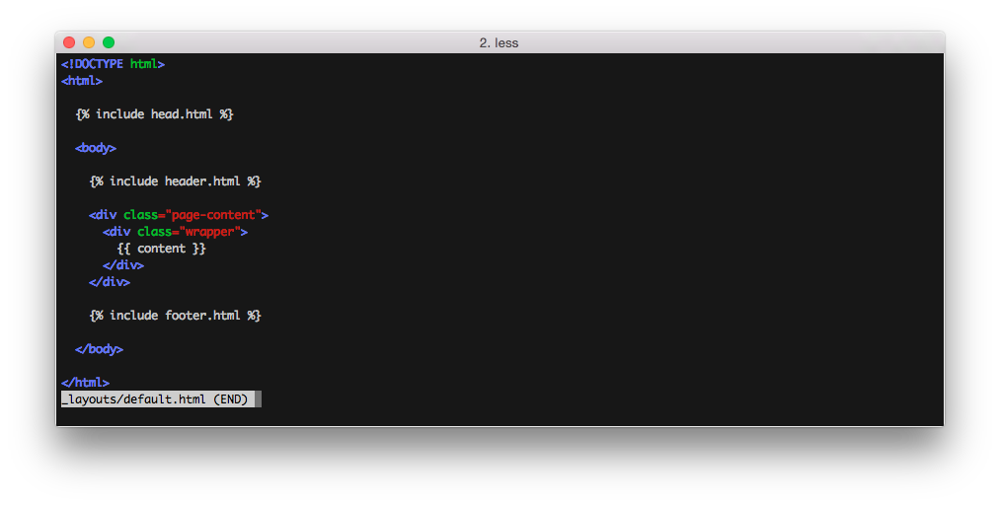

A simple, blog aware, static site generator
Presented by Mauricio Araya V. / @mabrizio
The Strange Case of Dr. Jekyll and Mr. Hyde
... depicts the gripping struggle of two opposing personalities—one essentially good, the other evil—for the soul of one man.
(written by Robert Louis Stevenson)
But, what is Jekyll?
Jekyll is a simple, blog-aware, static site generator. It takes a template directory containing raw text files in various formats, runs it through a converter (like Markdown) and the Liquid renderer.
Let's get it on
$ gpg --keyserver hkp://keys.gnupg.net ...
$ curl -sSL https://get.rvm.io
$ rvm install 2.1.0
$ mkdir -p ~/Projects/Jekyll
$ rvm gemset create jekyll
$ echo 2.1.0@jekyll > ~/Projects/Jekyll/.ruby-version
Let's get it on
$ cd ~/Projects/Jekyll
$ gem install jekyll
$ jekyll new myblog
$ cd myblog
$ jekyll serve
Directory structure
.
├── _config.yml
├── _includes
| ├── footer.html
| └── header.html
├── _layouts
| ├── default.html
| └── post.html
├── _posts
| ├── 2015-03-21-getting-file-permissions.md
| └── 2015-03-27-populate-subnets-into-route53.md
├── _data
| └── categories.yml
| └── tags.yml
├── _site
└── index.html
Basic Usage
$ jekyll build
# => The current folder will be generated into ./_site
$ jekyll build --destination <destination>
# => The current folder will be generated into <destination>
$ jekyll build --source <source> --destination <destination>
# => The <source> folder will be generated into <destination>
$ jekyll build --watch
# => The current folder will be generated into ./_site,
# watched for changes, and regenerated automatically.
$ jekyll serve
# => Jekyll will start serving your website at
# htt://localhost:4000
Important stuff
.
├── _config.yml
├── _includes
| ├── footer.html
| └── header.html
├── _layouts
| ├── default.html
| └── post.html
├── _posts
| ├── 2015-04-16-whatever.md
└── index.html
Config
# _config.yml
title: Your site title
email: email@example.com
description: "Your site description goes here"
url: "http://example.com"
twitter_username: jekyllrb
github_username: jekyll
# Build settings
markdown: kramdown
sass:
style: compressed
# GitHub
safe: true
lsi: false
permalink: /:categories/:title.html

Let the magic begin
+

Magic
$ git init
$ echo '### Jekyll Blog' > README.md
$ git add README.md
$ git commit -m "Uploading README file"
$ git remote add origin https://github.com/CRDevOps/jekyll-demo.git
$ git push origin master
Magic
$ git checkout -b gh-pages
$ vim _config.yml #Update your config
$ git add .
$ git commit -m "First commit"
$ git push origin gh-pages # if working under an Org
$ git push origin master # if working under an user account